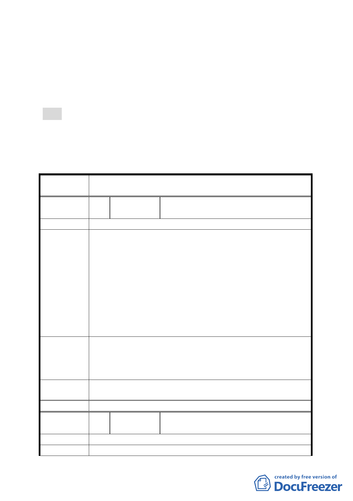

六、 公民或團體所提意見：計2件。
七、 申請單位：臺北市政府工務局新建工程處
八、 辦理單位：臺北市政府。
九、 法令依據：都市計畫法第27條第1項第4款。
決議：
一、 本案依公展計畫書內容通過。
二、 公民或團體所提意見審決如綜理表。
臺北市都市計畫委員會公民或團體所提意見綜理表
案
名
修訂臺北市北投區 13 號道路兩側道路用地（配合社子大橋新
建工程）主要計畫案
編
號1
陳情人
謝其勳、林水土、秦淑玲、宋朝田、林正
利
建 議 位 置 (原)北投區第 13 號道路及兩側(138、139)綠地
由於民國 98 年間臺北市政府公告發布實施之「變更臺
北市北投區第 13 號道路兩側綠地為道路用地(配合社子大橋
新建工程)主要計畫案」，該都市計畫書內私有土地之取得方
式為「徵收」，惟臺北市議會第 10 屆第 7 次定期大會臨時提
陳情理由
案:「關於本市第一期公共設施保留地北投 13 號道路及 138、
139 號綠地工程徵收爭議事，市府應依民國 78 年協議事項辦
理。」，為使計畫與施政前後一致性，將 98 年度都市計畫書
內私有土地之取得方式修訂為「本事業用地開發採一般徵收
為原則，惟如土地所有權人願先行提供使用，則將併入關渡
平原整體開發辦理」，爰依都市計畫法第 27 條提出此修訂案。
為避免過度行政行為及施政反覆造成外界疑慮，建議爾
建議辦法
後需用地人辦理此相關計畫變更階段時，應注意事情前因後
果(如信賴保護原則、比例原則、施政之前後一致性…)及後
續與土地所有權人善盡溝通並給予適當期限充分表達意見。
市府回應
說明
本計畫已檢討，無修正意見。
委員會決議 本案依公展計畫書內容通過。
編
號2
陳情人
林正洲、林榮楨、宋明漢、宋能漢、楊榮
瑞、陳識仁、秦有明、秦碧雲
建 議 位 置 (原)北投區第 13 號道路及兩側(138、139)綠地
陳情理由
由於民國 98 年間臺北市政府公告發布實施之「變更臺
-4-